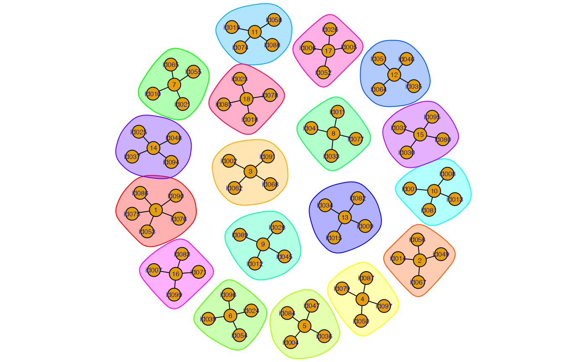

get-started.RmdThe socialroulette R package is a lightweight package for handling the recurrent problem of assigning individuals into groups of a fixed size. This happens, e.g., as part of mystery lunch scheduling or when assigning students into breakout rooms in video lectures. The work on the package was inspired by the blog post Long time, no see: Virtual Lunch Roulette,
The aim is to assign \(n\) participants into groups of size at least \(m\). If \(m\) is not a divisor of \(n\) then some of the groups have to contain more than \(m\) participants. As an example consider the scenario that 5 individuals have to be divided into groups of size at least 2. We shall adopt the convention, that group size shall be as close to \(m\) as possible and the group sizes should be as equal as possible. In the specific toy example this means that we will need 2 groups, one with 3 participants and one with 2 participants.
Remark: Partitions with \(m=2\) are also known as a matchings and can be handled particularly efficient using special-purpose graph algorithms. However, we use the \(m=2\) example in order to illustrate the package functionality with a simple to follow example. Later sections of the vignette contain some more realistic examples with \(m>2\).
library(socialroulette)
today <- Sys.Date()
frame <- tibble( id=sprintf("id%.02d",1:5), date=today)
round1 <- rsocialroulette(current_frame = frame, m=2, algorithm="srs")
#> Partitioning 5 individuals into groups of at least 2 (no past sessions).
#> Created 2 groups of sizes 3 2.
round1
#> [[1]]
#> [1] "id01" "id03" "id05"
#>
#> [[2]]
#> [1] "id02" "id04"An extension of this grouping problem occurs if we keep track of how participants were partitioned into groups the last time. It can be shown, that simple random sampling leads to quite high reunion probabilities. As an example: the probability to end up in the same group with at least one participant from last week when 50 individuals are partitioned into groups of \(m=4\) is about 20%. In order to improve on this, one can either use rejection sampling or a solver of the maximally diverse grouping problem.
#List of past partitions
past_sessions <- list(round1) %>% setNames(today)
#Same individuals one week later
frame2 <- frame %>% mutate(date = today+7)
#Check for each possible pair in frame2 how long ago (in days) it would be that they met.
socialroulette:::sessions_to_distance(frame2, past_sessions)
#> # A tibble: 10 x 4
#> id1 id2 date dist
#> <chr> <chr> <date> <dbl>
#> 1 id01 id02 2021-05-05 14
#> 2 id01 id03 2021-05-05 7
#> 3 id01 id04 2021-05-05 14
#> 4 id01 id05 2021-05-05 7
#> 5 id02 id03 2021-05-05 14
#> 6 id02 id04 2021-05-05 7
#> 7 id02 id05 2021-05-05 14
#> 8 id03 id04 2021-05-05 14
#> 9 id03 id05 2021-05-05 7
#> 10 id04 id05 2021-05-05 14For comparison, we now use maximally diverse grouping problem solver on the same toy example. This corresponds to taking a sledgehammer to crush a nut, but helps to show how the package works:
round2 <- rsocialroulette(current_frame = frame2, past_sessions=past_sessions, m=2, algorithm="mdgp")
#> Parsed with column specification:
#> cols(
#> id_int = col_character(),
#> group = col_character()
#> )
round2
#> [[1]]
#> [1] "id01" "id02" "id05"
#>
#> [[2]]
#> [1] "id03" "id04"Using this partitions we get the following re-unions, i.e. pairs of individuals which in round 2 meet again, despite already being in the same group in round 1. Note that it is easy to show that with 5 participants and \(m=2\), at least one re-union is needed.
sessions <- list(list(last_week = round1), list(this_week = round2))
pairs <- map(sessions, ~ socialroulette:::sessions_to_pairs(.x))
inner_join(pairs[[1]], pairs[[2]], by=c("id1", "id2"))
#> # A tibble: 1 x 4
#> date.x id1 id2 date.y
#> <chr> <chr> <chr> <chr>
#> 1 last_week id01 id05 this_weekWe continue with a slightly more advanced example, where we have a class with 100 students, which for a weekly virtual lab exercise class need to be divided into groups of at least 4. Since for various reasons not all students show up to each class, the sampling frame of individuals to be partitioned each week changes accordingly. Still, we would like to make the partitioning of the current week s.t. students get as many new acquaintances as possible.
Create a history of previous sessions as well as the current frame from a population of 100 individuals participating in the social roulette.
# Class of 100 students with 4 previous lectures
students <- tibble(id=sprintf("id%.3d@student.su.se", 1:100))
session_dates <- seq(as.Date("2021-03-31"), length.out=4, by="1 week")
# Simulate changing participation each week for the last 4 weeks (70% attendance)
frames <- purrr::map_df( session_dates, ~
students %>% slice_sample(n = rbinom(1,nrow(.), prob=0.7)) %>% mutate(date=.x))
# Generate some past sessions using simple random sampling
past_sessions <- frames %>%
group_split(date) %>%
map(~rsocialroulette(current_frame=.x, m=4, algorithm="srs")) %>%
setNames(session_dates)
#> Partitioning 61 individuals into groups of at least 4 (no past sessions).
#> Created 15 groups of sizes 5 4 4 4 4 4 4 4 4 4 4 4 4 4 4.
#> Partitioning 72 individuals into groups of at least 4 (no past sessions).
#> Created 18 groups of sizes 4 4 4 4 4 4 4 4 4 4 4 4 4 4 4 4 4 4.
#> Partitioning 70 individuals into groups of at least 4 (no past sessions).
#> Created 17 groups of sizes 5 5 4 4 4 4 4 4 4 4 4 4 4 4 4 4 4.
#> Partitioning 76 individuals into groups of at least 4 (no past sessions).
#> Created 19 groups of sizes 4 4 4 4 4 4 4 4 4 4 4 4 4 4 4 4 4 4 4.For a more realist scenario, we pretend that each previous session has been saved as a .csv file. For example like:
# Simulate the storage of each partition as a .csv file to disk
# with 3 columns: date, id1 and id2, i.e. all pairs
temp_dir <- tempdir() #adjust path to your setting if needed
socialroulette:::sessions_to_pairs( past_sessions ) %>%
group_split(date) %>%
walk(~ write_csv(x=.x, path=file.path(temp_dir, str_c("socialroulette-", .$date[1], ".csv"))))We thus read the partitions from disk and need to convert between the stored pair format (i.e. a data.frame listing each pair being in the same group as id1, id2 together with the corresponding date) back to the partition list format. This can be done as follows
# Read again from file
pairs <- map_df(list.files(path=temp_dir, pattern="socialroulette.*", full.names=TRUE), ~read_csv(file=.x))A small sanity check to ensure that the write and read did not really change any information:
# Convert into a pairs data.frame
past_sessions2 <- pairs %>% socialroulette:::pairs_to_session()
# Sanity check
all.equal(past_sessions, past_sessions2)
#> [1] TRUEEverything is thus now in place to generate the partition:
# Who is in the next class?
current_frame <- students %>% slice_sample(n = rbinom(1,nrow(.), prob=0.7)) %>%
mutate(date=max(session_dates) + diff(session_dates) %>% mean())
# Make the partition, which tries to bring together those who have not met in a long time
partition <- rsocialroulette(current_frame, past_sessions, m=4, algorithm="mdgp")The partition can be visualized using the igraph package: 
Of course the partition can be stored to file as before in order to include it in the past partitions next week:
list(partition) %>%
setNames(current_frame %>% slice(1) %>% pull(date)) %>%
socialroulette:::sessions_to_pairs() %>%
write_csv(path=file.path(temp_dir, str_c("socialroulette-", .$date[1],".csv")))or can be stored in a Zoom compatible breakout room specification format:
partition %>%
socialroulette:::partitionList_to_frame() %>%
rename(email=id) %>%
mutate(room = sprintf("room%.03d",group)) %>%
select(room, email) %>%
write_csv(path=file.path(temp_dir, str_c("zoom-breakoutrooms.csv")))